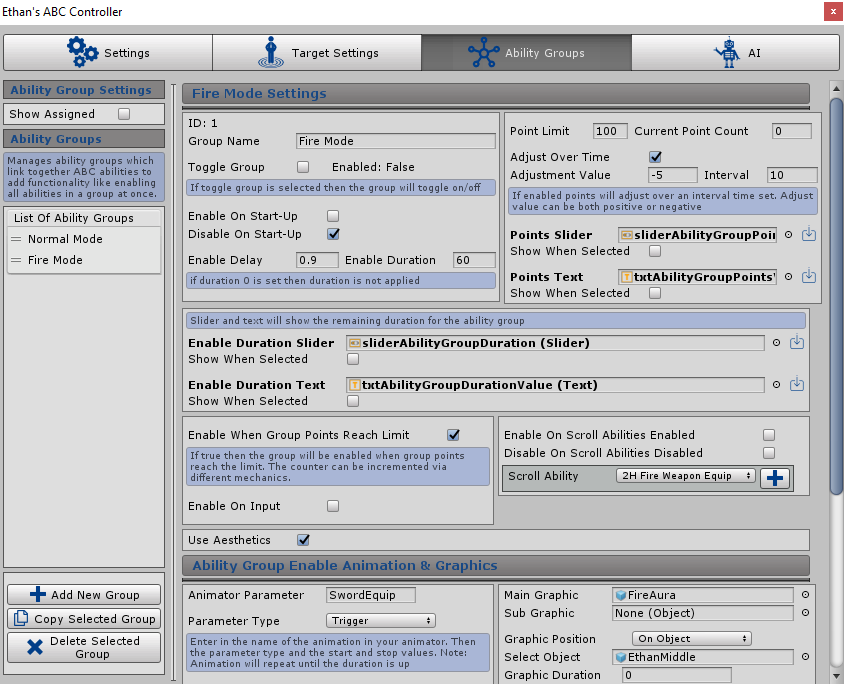

ABC Groups
Overview
This part of the system allows for the setup of ABC groups. Abilities can be assigned to groups which have been created, more information on assigning abilities to groups can be found by clicking the following link: Allow Group Assignment During play different events can be setup which will enable or disable all abilities assigned to an ability group. Weapons can also be set to be equipped when the group is enabled or disabled
For example; An ability group ‘Fire Mode’ can be created and all fire related abilities can be assigned to this group. During play it can be setup so whenever the user presses a key/button then it will activate the Fire Mode group, enabling all the fire related abilities ready to be used in game. There is more ways to initiate the enable/disable of a group then just key input including a points system and a way to enable/disable a group when a scroll ability becomes active ‘equipped’.
This is the best way to link together multiple abilities under one group allowing for them all to be enabled/disabled at the same time after a certain defined event depending on options ticked in the groups configuration.

Show Assigned
Selecting this tick box will show all abilities that are assigned to the group selected in the list (the group which currently has it’s config open)
Ability Groups List
At the left of this section is a list of all the ability groups which have been setup for the entity. The groups in the list can be dragged to a different position by clicking the “=” and moving the mouse however this is for ease of navigation only and does not affect anything during play.
Selecting an ability group in the list will load it’s settings to the right. New ability groups can be added by hitting the “+ Add New Group” button and if an ability group is currently selected it can be copied with the “Copy Selected Group” button. Any selected ability group can also be deleted by pressing the “X Delete Selected Group” Button.
Once a ability group is selected the settings detailed below will appear.
ID
An automatically generated number which links to the ability group. This is used by the system to always identify the group even if the group name changes. This ID is also used within ability effects to identify which group the effect is adjusting etc.
Group Name
The name of the group, this will modify the name in the list and any text can be entered here.
Toggle Group
Used for in game debugging only. Clicking this tick box during play will enable/disable the group.
Enabled
A label which will display if the ability group is currently enabled or disabled.
Enable On Start-Up
If ticked then the ability group will become enabled as soon as the game starts.
Disable On Start-Up
If ticked then the ability group will become disabled as soon as the game starts.
Enable Delay
A float value defining how long (seconds) after the ability group has been enabled that it will actually start enabling all the abilities linked to it. This allows for any animations to play out before the abilities are actually enabled etc.
Enable Duration
Determines how long the ability group will be enabled for before it’s automatically disabled (disabling all the linked abilities also). If 0 is entered then a duration is not applied and the group will remain enabled until it’s disabled through other events (outside of duration). This can be used for an example in a game which has a power up mode which only lasts a certain duration after it’s been activated.
Point Limit
The max number of points the group can reach. Points can be setup to generate over time or through ability effects LINK TO EFFECT CHART. Ability groups have an option to automatically be enabled once the points reach the limit . There is also an option to stop the group being enabled via input unless the points have reached the limit. More information on that setting can be found by clicking the following link: Enable On Input
Current Point Count
Determines how many points the ability group currently has will never go above the max limit defined above.
Adjust Over Time
If ticked then the points for the ability group will automatically adjust over time. If enabled the following settings will appear:
-
Adjustment Value
-
Determines the amount of points that are adjusted at each interval. This can be either a negative or a positive number.
-
Interval
-
The time between point adjustments. I.e every 10 seconds adjust the points by -5
Points Slider
This setting requires a Unity Slider object which can be created from the Unity menu: GameObject > UI > Slider. The slider will show the current group point count during play and will always make sure the max value matches the group point limit to accurately represent how ‘filled’ the bar should be.
If the load default icon  is clicked then the ABC_GUI default prefab will be added to the Hierarchy
and the sliderAbilityGroupPoints object will be added to the setting. This example can be used, referenced or edited.
is clicked then the ABC_GUI default prefab will be added to the Hierarchy
and the sliderAbilityGroupPoints object will be added to the setting. This example can be used, referenced or edited.
Points Slider - Show When Selected
If enabled then the sliders setup in this section will only show whilst the entity is being targeted by another ABC entity. If disabled then the sliders will always show.
Points Text
This setting requires a Unity text object which can be created from the Unity menu: GameObject > UI > Text. This object can be placed anywhere on the screen and will display the current group point count and the group point limit in the following format: CurrentPoints/PointsLimit
If the load default icon is clicked then the ABC_GUI default prefab will be added to the
Hierarchy and the txtManaValue object will be added to the setting. This example can be used, referenced or edited.
Points Text - Show When Selected
If enabled then the text object setup in this section will only show whilst the entity is being targeted by another ABC entity. If disabled then the text will always show.
Enable Duration Slider
Will only show if the Enable Duration setting is greater than 0 (The ability group will only be enabled for a duration). This setting requires a Unity Slider object which can be created from the Unity menu: GameObject > UI > Slider. The slider will show the remaining duration of the ability group, how long is left until the group is disabled during play and will always make sure the max value matches the starting duration to accurately represent how ‘filled’ the bar should be.
If the load default icon is clicked then the ABC_GUI default prefab will be added to the
Hierarchy and the sliderAbilityGroupDuration object will be added to the setting. This example can be used, referenced or edited.
Enable Duration Slider - Show When Selected
If enabled then the sliders setup in this section will only show whilst the entity is being targeted by another ABC entity. If disabled then the sliders will always show.
Enable Duration Text
This setting which requires a Unity text object which can be created from the Unity menu: GameObject > UI > Text. This object can be placed anywhere on the screen and will display countdown text showing the remaining duration of the ability group, how long is left until the group is disabled during play.
If the load default icon is clicked then the ABC_GUI default prefab will be added to the
Hierarchy and the txtAbilityGroupDurationValue object will be added to the setting. This example can be used, referenced or edited.
Enable Duration Text - Show When Selected
If enabled then the text object setup in this section will only show whilst the entity is being targeted by another ABC entity. If disabled then the text will always show.
Enable When Group Point Reach Limit
If ticked then the group will be enabled automatically when the group points reach the limit.
Enable On Input
If ticked then the ability group can be toggled on by a key/button trigger input. If enabled the following settings will appear:
-
Group Points Limit Reach Required
-
If ticked then the input trigger will only enable the ability group if the groups’ points
is at the current limit. This can be used in games where the player decides when the activate
the group once they have accumulated the max points needed.
-
Input Type
-
The type of input expected to enable the ability group, either a hardcoded key can be inserted or a
button string which links to the same string setup in the Unity Input Manager.
-
Key (If ‘Key’ Input Type is selected)
-
A key can be selected from Unity’s predefined drop down to trigger the click to
enable the ability group. This key is hardcoded.
-
Button (If ‘Button’ Input Type is selected)
-
A string can be entered which should match the same string setup in the Unity Input Manager.
This method allows the end user to configure inputs as per Unity functionality to trigger
the click to enable the ability group.
Enable/Disable With Scroll Abilities
The ability group can be configured to enable and disable with any scroll abilities. I.e if a gun (scroll ability) exists then the ability group can be setup to be enabled when the gun is enabled/‘equipped’ and also setup to be disabled when the gun is disabled/‘unequipped’. More information on scroll abilities can be found by clicking the following link: Scroll Ability.
Ability groups can be linked to scroll abilities via the drop down in this section next to the ‘Scroll Ability’ label. Once a scroll ability has been selected in the drop down the “+” can be selected to add it to the list. The ‘X’ can be pressed next to any scroll ability in the list to remove it. There is no limit to how many scroll abilities you can link to the ability group.
2 additional settings exist to control how you want the ability group to act when scroll abilities are enabled/disabled
-
Enable On Scroll Abilities Enabled
-
If ticked then the ability group will become enabled when any scroll abilities linked are enabled and
‘equipped’ as the current active scroll ability
-
Disable On Scroll Abilities Disabled
-
If ticked then the ability group will become disabled when any scroll abilities linked are disabled
and ‘unequipped’ and is no longer the current active scroll ability
Use Aesthetics
If enabled then graphics and animations can be setup to activate whenever the ability group is enabled. An example of use for this functionality is having a particle show all over the entities body after a short animation when the ‘Fire Mode’ ability group is enabled.
Animator Parameter
Configuration can be setup to play an animation when the ability group is enabled.
Animation Clips defined will play on ABC's own Animation Runner system which means you can set to run animations without using Unity's Animator. To determine which animation to play simply select or drag and drop an Animation Clip into the setting. With all animations in ABC you have the option of using one or both of the animation systems (Unity Animator/ABC Animation Runner). It is recommended however that only one is used. Once an Animation Clip is selected the following settings will appear:
-
Duration
-
How long the animation clip will run for before it is stopped
-
Speed
-
The speed of the animation clip. 1 is normal speed. A higher value will speed up the animation clip. A lower number will slow the animation clip down.
-
Delay
-
Defines the delay before the animation clip is run
Animator Parameter
Configuration can be setup to play an animation when the ability group is enabled. The animation system links directly into the Unity animation controller attached to the entity and is required for the animations to activate. To determine which animation to play the “Animation Parameter” which has been setup in Unity needs to be written in the parameter config box, then the matching parameter type needs to be selected from the drop down, depending on the parameter selected the following settings will appear with default values:
-
Trigger Parameter
-
No further settings will appear as the animation type is a trigger and will just activate once as per Unity system
-
Float, Integer Parameter
-
If either of these options are selected then a Animation Duration, On Value and Off Value can be entered.
The animation will activate the parameter with the On value and then deactivate with the Off value after the Duration.
Only a float/integer value should be entered.
-
Bool Parameter
-
If either of these options are selected then a Animation Duration, On Value and Off Value can be entered.
The animation will activate the parameter with the On value and then deactivate with the Off value after the
Duration. Only “True” should be entered in the On value and “False” entered in the off value.
Main Graphic
Any object can be added here which will appear when the ability group is enabled. A particle object for example can be set here which will appear with the crosshair override. If no object is added then no graphic will appear.
Sub Graphic
A second object can be added here which will become a child of the Main Graphic described above. This object like the main graphic will appear whenever the ability group is enabled.
Graphic Position
This setting defines where the graphic will appear. The following options can be selected from the dropdown:
-
Self
-
The graphics starting position will be at the entity object the ABC system is attached too
-
The graphic will become a child of the entity
-
Target
-
The graphics starting position will be at the current target of the entity.
If no target is selected and “Auxiliary SoftTarget” is ticked then the graphic will
as a backup appear at the current soft target of the entity. If no target/soft target is
selected then the graphic will appear at the entity as if ‘Self’ was selected
-
The graphic will become a child of the target
-
On Object
-
The graphics starting position will be at a gameobject defined in additional setting ‘Select Object’.
Any object can be dragged or selected onto the setting field. The setting will appear when this option is selected.
-
The graphic will become a child of the Object added to the setting.
-
On World
-
The graphics starting position will be at the current world target of the entity.
If no target is selected then the graphic will appear at the entity as if ‘Self’ was selected
-
The graphic will become a child of the world target.
-
Camera Center
-
The graphics starting position will be at the entities defined camera or the main camera if none has been defined.
More information on setting the entities camera can be found by clicking the following link:
Setting Entities Camera.
-
The graphic will become a child of the camera
-
On Tag
-
The graphics starting position will be at a gameobject which has a tag which matches the tag defined in additional
setting ‘Select Tag’. Only Unity defined tags can be selected from the dropdown. The setting will appear
when this option is selected.
-
The gameobject with the tag is chosen using ‘FindGameObjectWithTag’ so objects found may vary if more then
one exists with the same tag.
-
The graphic will become a child of the gameobject found when searching for the tag.
-
On Self Tag
-
The graphics starting position will be at a object which is either the entity object the ABC system is
attached too or any child objects linked to the entity which also has a tag which matches the tag
defined in additional setting ‘Select Tag’. Only Unity defined tags can be selected from the dropdown.
The setting will appear when this option is selected.
-
The graphic will become a child of the gameobject found when searching for the self tag.
Graphic Duration
How long the graphic will last for. If 0 is entered then the graphic will remain until the ability group is disabled.
Graphic Delay
How long after the ability group is enabled the graphic will show.
Graphic Offset
X, Y, Z float values can be entered which will modify where the graphic object is positioned from it’s starting position. I.e 90 in the X box will move the object up the X axis by 90 from the position it starts at.
Forward Offset
A float value can be entered here to move the graphic object forward from it’s starting position. If negative value is entered it will move the graphic backwards rather then forwards.
Right Offset
A float value can be entered here to move the graphic object to the right from its starting position. If negative value is entered it will move the indicator left rather then right.
Enable Groups When Disabled
If ticked then other ability groups can be set to be enabled once this group has been disabled. Allows entity to switch back from power mode to normal mode once power mode is disabled etc.
Ability groups to be enabled when this one is disabled can be added by selecting a group in the dropdown next to the ‘Select Group’ label and then pressing the “+” button. The order of the groups in the list can be changed with the up and down arrows. Groups can be removed from the list by hitting the “X” button at the end of the row.
Disable Groups When Enabled
If ticked then other ability groups can be set to be disabled once this group has been enabled. Allows entity to turn off normal mode when entering power mode etc.
Ability groups to be disabled when this one is enabled can be added by selecting a group in the dropdown next to the ‘Select Group’ label and then pressing the “+” button. The order of the groups in the list can be changed with the up and down arrows. Groups can be removed from the list by hitting the “X” button at the end of the row.
Equip Weapon When Enabled
If ticked then the weapon to equip when the group is enabled can be added by selecting a weapon in the dropdown next to the ‘Select Weapon’ label and then pressing the “Update” button. Ticking the box will also make the following option appear:
-
Quick Toggle
-
If enabled then the weapon will be equipped instantly without running animations etc
Equip Weapon When Disabled
If ticked then the weapon to equip when the group is disabled can be added by selecting a weapon in the dropdown next to the ‘Select Weapon’ label and then pressing the “Update” button. Ticking the box will also make the following option appear:
-
Quick Toggle
-
If enabled then the weapon will be equipped instantly without running animations etc